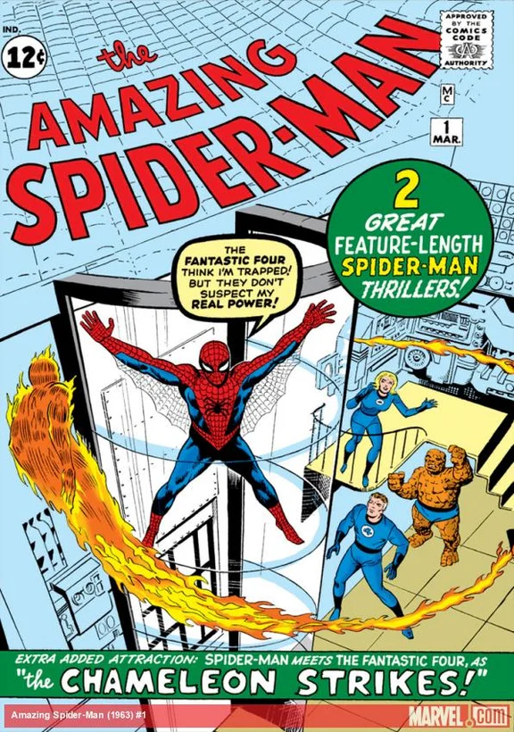
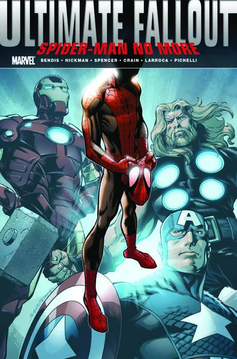

Comic origins
How Spider-Man began.
Before the films, Peter Parker had eleven pages to win readers over. His first adventure was about a kid from Queens who got exactly what he wanted and made a mistake he could never take back.
Follow Peter’s story

Who created Spider-Man?
Writer Stan Lee and artist Steve Ditko introduced Peter Parker in Marvel’s Amazing Fantasy #15 in 1962. Ditko drew the quiet moments alongside the spectacle. We meet Peter as a lonely high school student before we ever see what he can do with his powers.
In 1963, Lee and Ditko returned for The Amazing Spider-Man #1. Peter already has his powers when that series begins. With money tight at home, he tries to join the Fantastic Four in the hope that being a superhero pays a salary.
Original art at the Library of Congress The early issues at Marvel
Peter Parker · Queens
The boy behind the mask
The events of Amazing Fantasy #15
The bite
Peter lives with his Aunt May and Uncle Ben in Queens. At a science exhibition, a spider exposed to radiation bites him. On the way home he leaps clear of a car and finds himself clinging to the wall above it.
A show-business career
After testing his strength against a wrestler, Peter sees a way to earn money. He makes a costume, invents mechanical web-shooters and takes his new act to television. His first audience knows him as Spider-Man.
The man he lets go
Leaving the TV studio, Peter steps aside as a burglar runs past. Later, Uncle Ben is killed. When Peter tracks down the killer, he recognizes the man he could have stopped. That choice gives him a reason to use his powers to help someone else.

Miles Morales · Brooklyn
Another kid takes up the mask
In 2011, writer Brian Michael Bendis and artist Sara Pichelli introduced Miles Morales in Ultimate Fallout #4. Miles comes from Earth-1610, the parallel world of Marvel’s original Ultimate comics. He first appears as Spider-Man after the death of that world’s Peter Parker.
His own series then turns back the clock. In Ultimate Comics Spider-Man (2011) #1, Miles is a Brooklyn kid visiting his uncle Aaron when a genetically altered spider bites him. Start there to follow his story from the beginning.
Read their first issues
Comic cover artwork © Marvel.